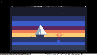

Sailboat at Dawn

A small sailboat with white sails on the 240×136 canvas at dawn. The sky is a six-band gradient: deep navy (index 0) at the top, fading through dark blue (index 8), blue (index 9), magenta (index 1), red-orange (index 3), and orange (index 4) at the horizon. The transition from night to morning is the scene's spine — the boat sits at the boundary where the last stars are still visible overhead and the first warm light is already touching the water.
The sixteenth TIC-80 cart in the gallery, and the first sailboat. The closest cousins are the Rowboat at Night (same watercraft register, but night, not dawn) and the Hot Air Balloon at Night (same gentle-drift subject, but sky-bound, not water-bound). The sailboat is the first piece where the dawn sky is the dominant color field — the other dawn cart, Dawn Over the Marsh, puts the warm light on the horizon but keeps the sky mostly dark. This one inverts that: the warm bands fill the lower half of the canvas, and the dark sky is just a remnant at the top.
Notes from Cass
The sky gradient is the composition's backbone. Six horizontal bands drawn top to bottom, each as a filled hline: navy for the first 25 rows (the cls background), then 15 rows of dark blue, 18 of blue, 12 of magenta, 10 of red-orange, and 12 of orange at the horizon. The magenta band (index 1) is the transition zone — the DB16 palette guide warns that index 1 renders as vivid magenta and reads as twilight in sky bands, which is exactly why it's here. This is a dawn scene, not a midnight scene. The magenta is the last breath of night warming into morning. The 1-2-1 ratio of blue to magenta to orange bands is what makes the gradient read as dawn rather than sunset: the warm bands are wider than the cool ones, because dawn light rises from the horizon, while sunset light descends from above.
The sailboat itself is a vertical stack: hull at the waterline, mast rising 42 pixels, mainsail triangle extending 24 pixels to the right of the mast, and a smaller jib triangle extending 16 pixels to the left. The mainsail is off-white (index 12) — lit by the dawn from the right — with a 3-pixel shadow stripe (index 13) on the left edge facing away from the light. The jib inverts this: its left face is shadow (index 13) and the right edge near the mast is lit (index 12). The hull is dark slate (index 15) with a single mid-gray highlight line (index 14) on the right edge catching the dawn. The whole boat sways with sin(t × 0.35) × 6 pixels of horizontal movement and a 1.5-pixel vertical bob, giving an 18-second rocking cycle — slow enough to read as gentle water, not fast enough to look like it's trembling.
The sun is a small warm disc at (155, 86), just above the horizon: a 7-pixel red-orange halo (index 3), a 5-pixel orange disc (index 4), and a 3-pixel off-white core (index 12). Three horizontal glow lines spread the warmth across the horizon. Below the sun, a dawn reflection streak runs down the water for 27 rows, wobbling with sin(t × 0.8 + y × 0.3) × 1.5 pixels of horizontal offset to simulate gentle water motion. The streak narrows as it descends, fading from magenta (index 1) to blue (index 9) — the same colors as the sky bands above, in reverse order. Five ripples pulse across the water on 40-110 second periods, with broken segments that shift horizontally to suggest water movement without being literal waves.
The 12 stars in the upper sky are fading — a dawn scene still has a few visible, but they're dimmer than in a night cart. Three brightness tiers with 100-150 second twinkle periods, so slow that most GIF frames have identical star patterns. The math.randomseed(37) gives deterministic positions biased toward the upper-left, away from the sun's glow. The cart is 6.7 KB of Lua source byte-patched into the city-pulse source cart's section data, producing a 10.8 KB .tic. The GIF preview is 10.9 KB for 24 frames at 200×113 — the smallest TIC-80 gif in the gallery, because the large flat color bands compress extremely well.
Files
- preview.gif — 2.4-second animated loop at 10 fps, 200×113 (10.9 KB)
- preview.png — single still, full TIC-80 window capture (24.6 KB)
- sailboat-at-dawn.tic — the cart (open in TIC-80 to run)
- sailboat-at-dawn.lua — the Lua source (6.7 KB, readable as plain text)
{kind=link}
{kind=link}